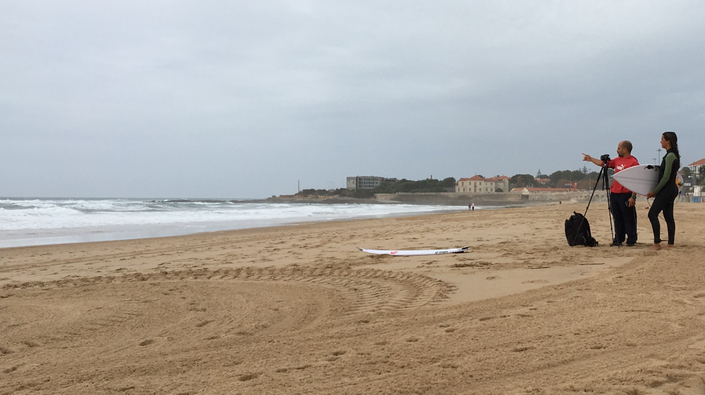

Fisiologista do exercício e preparador físico, com mais de 15 anos de experiência no treino e acompanhamento de atletas de alta competição.
Sou fisiologista do exercício e preparador físico, com mais de 15 anos de experiência no treino e acompanhamento de atletas de alta competição. Desde 2015 tenho-me especializado na preparação física e fisiológica aplicada à Vela Olímpica, trabalhando com atletas nacionais e internacionais em diferentes classes e ciclos olímpicos.
O meu trabalho assenta na integração entre avaliação, planeamento, controlo da carga, recuperação, prevenção de lesão e acompanhamento no terreno — transformando informação em decisões práticas, ajustadas à realidade individual de cada atleta e às exigências específicas da modalidade.
Ao longo do percurso trabalhei em contextos de elevada exigência competitiva, incluindo Jogos Olímpicos, Campeonatos do Mundo e Jogos Pan-Americanos. Paralelamente à Vela, desenvolvi trabalho com atletas de Surf, Ténis, Freediving, Padel, desportos de combate e desportos motorizados.

O princípio central é utilizar dados objetivos para decidir melhor — mantendo sempre uma interpretação individual e uma ligação direta à prática.
A pessoa, a modalidade e o contexto do atleta.
Apenas o que acrescenta informação relevante.
Os resultados em conjunto com a realidade do atleta.
As necessidades transformadas em plano aplicável.
A execução no terreno, ajustando sempre que necessário.
A resposta ao treino, orientando as próximas decisões.
"Não me limito a avaliar ou a entregar um plano. Procuro observar o atleta durante o treino, interpretar o que está a acontecer, adaptar exercícios e garantir continuidade entre avaliação, planeamento e prática."
Aumenta o rigor e a exigência das sessões, e permite perceber a resposta à fadiga e a qualidade do movimento — aspetos que nem sempre aparecem nos dados.
Treino, recuperação, sono, alimentação, contexto emocional e saúde fazem parte do mesmo processo, em articulação com toda a equipa técnica.
Três ciclos Olímpicos e múltiplas modalidades — conhecimento científico combinado com experiência real de alta competição.
Disponível para colaborar com federações, clubes e academias em consultoria de preparação física, formação de equipas técnicas e palestras sobre preparação física aplicada a desportos de vento, ondas e alta competição em geral.
Disponível para acompanhamento de atletas, federações e estruturas técnicas — em Portugal e internacionalmente.